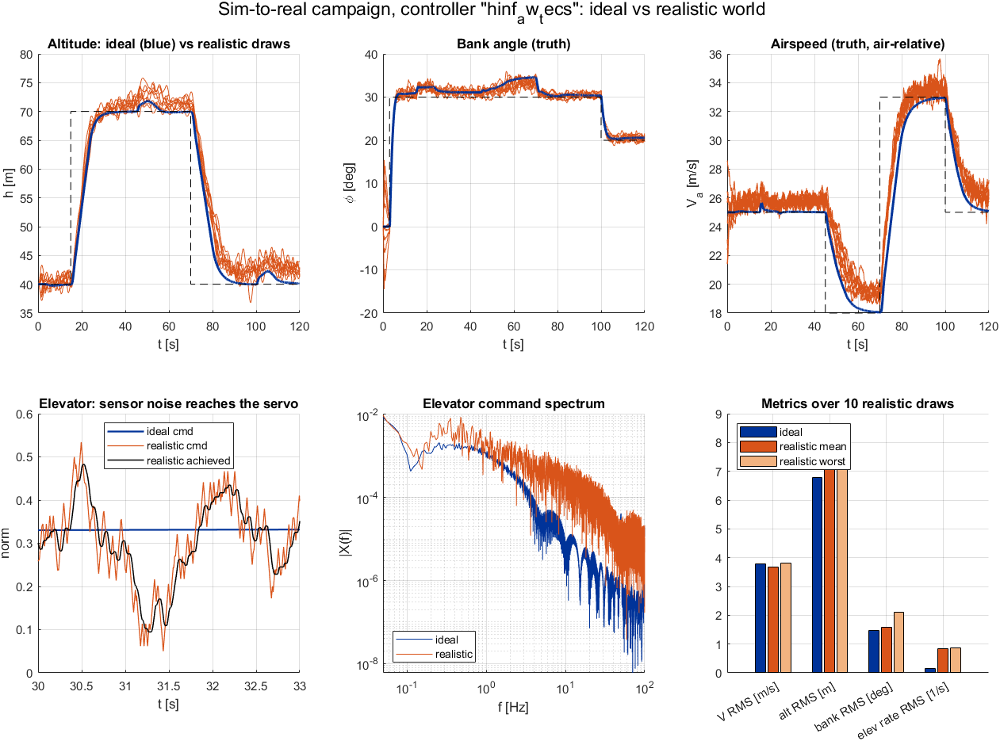

Featured Projects
Master Thesis: Real-time Line Detection with Transformers
Compared classical methods (Hough, LSD), CNNs and transformers for line detection on an AGV. Modified the model architecture for the task, built a sim-to-real dataset from CARLA and real recordings, trained on an HPC cluster, and brought the full pipeline (NanoSAM segmentation, GPU-RANSAC, 3D back-projection, Kalman filter) to real time on a Jetson AGX Orin. The video shows the model on real recordings with the live IoU score.


Fixed-wing UAV Autopilot (personal project)
Safety-critical C++17 autopilot for a fixed-wing UAV, built in a lightweight DO-178C style: requirements, hazard assessment and a code-to-test trace matrix are gated in CI. A Simulink 6-DOF flight simulator with 10/50/200 Hz loops, Unreal 3D view and live cockpit dashboard serves as the reference. I designed gain-scheduled structured H-infinity attitude and rate control with anti-windup and a TECS energy controller, and checked them in standard flight-test cycles and a sim-to-real Monte Carlo campaign with airframe uncertainty, servo limits, sensor noise, wind and turbulence. The C++ core is verified back-to-back against Simulink traces, runs software-in-the-loop against JSBSim and cross-compiles for an STM32 Cortex-M4F. A ROS 2 companion with Gazebo and OpenVINS for GNSS-denied navigation is in progress. Built with Claude Code: sub-agents in parallel git worktrees, clang-format/clang-tidy hooks and an MCP server for MATLAB.
Autonomous Electric Bus (UPBUS, PEM RWTH)
Recommissioned a prototype with years of development history from its wiring diagrams in two months and onboarded the team. Integrated localisation, odometry, perception and heading control in ROS 2 and tested it on the moving vehicle, with stereo camera, LiDAR and odometry fusion for obstacle detection and YOLOv8 on the Jetson with TensorRT.
CI/CD and Hardware-in-the-Loop for the Bus
Built a Docker-based CI/CD pipeline that runs about 200 automated tests before each deployment, including unit and module tests to ISO 26262 with static code analysis. On-vehicle debugging went from days to hours. Ethernet HIL tests between simulation and the Jetson cut latency by more than an order of magnitude after tuning Fast DDS.
Agentic Engineering Workflows
In the UPBUS project and my own projects I use agentic coding workflows with Claude Code, custom skills, sub-agents, hooks and MCP servers to write the scripts and tests around vehicle software. An MCP server for MATLAB generates models and runs their unit tests automatically. My job-search pipeline runs hourly on GitHub Actions in the same way.
Fuel-cell Hybrid Truck (SELV2, PEM RWTH)
Commissioned and tested a new ECU and cut CAN integration effort by 70% with MATLAB scripts for XCP calibration and automated processing of about 800 VCU signals. Developed a one-pedal-drive function with recuperation that respects motor, battery and fuel-cell limits, and validated it on the vehicle.
Lateral Control under Delay and Noise
Closed-loop analysis of Stanley and LTV-MPC controllers with realistic detection noise, dropouts, actuator delay and steering limits. Found and fixed two delay-compensation bugs and tuned the MPC so that tracking error fell from metres to centimetres, checked with Bode and Nyquist margins.
Hyperloop Powertrain (Tachyon Hyperloop)
Led a team of 8 students in powertrain and control. Took the powertrain from scratch to its first demonstration in 1.5 years, passed all rulebook tests at the European Hyperloop Week and received an award for a promising electrical subsystem. Wrote the brake ECU software in Simulink for TI C2000, commissioned a 90 kW axial-flux motor on the HV inverter and integrated a 350 V battery pack.
Battery Cell Test & Sort Station (personal project)
Personal TIA Portal V20 project on a SIMATIC S7-1500: SCL step chain, PackML-style modes, fault reactions, E-stop and guard-door logic, WinCC Unified HMI, plant simulation and unit tests in CI.
GitHubDrive & Bearing Test Benches (ENGIRO, Elgeti)
Built the PLC control for 48 V and 96 V drive test benches in ST and FBD to IEC 61131-3, and cut manual signal handling by up to 90% with a Python script that imports DBC files into CODESYS. Designed bearing test benches, programmed them in CODESYS and automated the test sequences in LabVIEW.